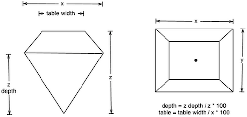
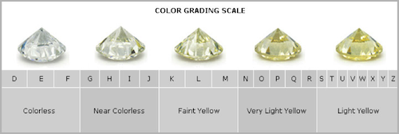
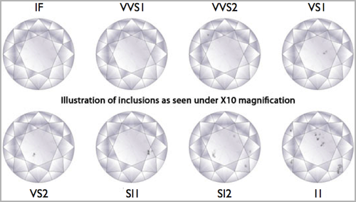

Diamonds - Part 1 - In the rough - An Exploratory Data Analysis
Other posts in this series:
- Diamonds - Part 2 - A cut above - Building Linear Models
- Diamonds - Part 3 - A polished gem - Building Non-linear Models
In this case study, we explore the diamonds dataset. Then, in the next posts, we build models that predict the price of a diamond. A model is a formula that a computer learns from examples. Some models are linear (they use straight-line relationships) and some are non-linear (they can also learn curves).
Data Description
The diamonds dataset has almost 54,000 diamonds. For each diamond, it gives the price (in US dollars of 2008) and other attributes, such as the weight and the quality grades. We call each attribute a feature.
dfDescription <- tribble(~ Attribute, ~ Description,
"price", "price in 2008 USD",
"carat", "weight of a diamond (1 carat = 0.2 gms)",
"cut", "quality of the cut (Fair, Good, Very Good, Premium, Ideal)",
"color", "diamond color from D (best) to J (worst)",
"clarity", "a measurement of how clear the diamond is (I1 (worst), SI2, SI1, VS2, VS1, VVS2, VVS1, IF (best))",
"x", "length in mm",
"y", "width in mm",
"z", "depth in mm",
"depth", "total depth percentage = z/mean(x, y)",
"table", "width of the top of diamond relative to widest point")
knitr::kable(dfDescription)| Attribute | Description |
|---|---|
| price | price in 2008 USD |
| carat | weight of a diamond (1 carat = 0.2 gms) |
| cut | quality of the cut (Fair, Good, Very Good, Premium, Ideal) |
| color | diamond color from D (best) to J (worst) |
| clarity | a measurement of how clear the diamond is (I1 (worst), SI2, SI1, VS2, VS1, VVS2, VVS1, IF (best)) |
| x | length in mm |
| y | width in mm |
| z | depth in mm |
| depth | total depth percentage = z/mean(x, y) |
| table | width of the top of diamond relative to widest point |



Data Summaries
vFeaturesCat <- dfInput %>% select_if(is.factor) %>% colnames()
vFeaturesNum <- dfInput %>% select_if(is.numeric) %>% colnames()visdat::vis_dat(dfInput) + theme_quant()
This chart shows all the features and their types. No values are missing in this dataset.
Next, we look at the numbers for each feature:
Hmisc::describe(dfInput)dfInput
10 Variables 53940 Observations
----------------------------------------------------------------------------------------------------------------------------------------------------------------
price
n missing distinct Info Mean pMedian Gmd .05 .10 .25 .50 .75 .90 .95
53940 0 11602 1 3933 3180 4012 544 646 950 2401 5324 9821 13107
lowest : 326 327 334 335 336, highest: 18803 18804 18806 18818 18823
----------------------------------------------------------------------------------------------------------------------------------------------------------------
carat
n missing distinct Info Mean pMedian Gmd .05 .10 .25 .50 .75 .90 .95
53940 0 273 0.999 0.7979 0.75 0.5122 0.30 0.31 0.40 0.70 1.04 1.51 1.70
lowest : 0.2 0.21 0.22 0.23 0.24, highest: 4 4.01 4.13 4.5 5.01
----------------------------------------------------------------------------------------------------------------------------------------------------------------
cut
n missing distinct
53940 0 5
Value Fair Good Very Good Premium Ideal
Frequency 1610 4906 12082 13791 21551
Proportion 0.030 0.091 0.224 0.256 0.400
----------------------------------------------------------------------------------------------------------------------------------------------------------------
color
n missing distinct
53940 0 7
Value J I H G F E D
Frequency 2808 5422 8304 11292 9542 9797 6775
Proportion 0.052 0.101 0.154 0.209 0.177 0.182 0.126
----------------------------------------------------------------------------------------------------------------------------------------------------------------
clarity
n missing distinct
53940 0 8
Value I1 SI2 SI1 VS2 VS1 VVS2 VVS1 IF
Frequency 741 9194 13065 12258 8171 5066 3655 1790
Proportion 0.014 0.170 0.242 0.227 0.151 0.094 0.068 0.033
----------------------------------------------------------------------------------------------------------------------------------------------------------------
depth
n missing distinct Info Mean pMedian Gmd .05 .10 .25 .50 .75 .90 .95
53940 0 184 0.999 61.75 61.8 1.515 59.3 60.0 61.0 61.8 62.5 63.3 63.8
lowest : 43 44 50.8 51 52.2, highest: 72.2 72.9 73.6 78.2 79
----------------------------------------------------------------------------------------------------------------------------------------------------------------
table
n missing distinct Info Mean pMedian Gmd .05 .10 .25 .50 .75 .90 .95
53940 0 127 0.98 57.46 57.5 2.448 54 55 56 57 59 60 61
lowest : 43 44 49 50 50.1, highest: 71 73 76 79 95
----------------------------------------------------------------------------------------------------------------------------------------------------------------
x
n missing distinct Info Mean pMedian Gmd .05 .10 .25 .50 .75 .90 .95
53940 0 554 1 5.731 5.685 1.276 4.29 4.36 4.71 5.70 6.54 7.31 7.66
lowest : 0 3.73 3.74 3.76 3.77 , highest: 10.01 10.02 10.14 10.23 10.74
----------------------------------------------------------------------------------------------------------------------------------------------------------------
y
n missing distinct Info Mean pMedian Gmd .05 .10 .25 .50 .75 .90 .95
53940 0 552 1 5.735 5.69 1.269 4.30 4.36 4.72 5.71 6.54 7.30 7.65
lowest : 0 3.68 3.71 3.72 3.73 , highest: 10.1 10.16 10.54 31.8 58.9
----------------------------------------------------------------------------------------------------------------------------------------------------------------
z
n missing distinct Info Mean pMedian Gmd .05 .10 .25 .50 .75 .90 .95
53940 0 375 1 3.539 3.51 0.7901 2.65 2.69 2.91 3.53 4.04 4.52 4.73
lowest : 0 1.07 1.41 1.53 2.06, highest: 6.43 6.72 6.98 8.06 31.8
----------------------------------------------------------------------------------------------------------------------------------------------------------------price: The average price of a diamond is about USD 4000. Many diamonds are much more expensive than most others. We call such unusual values outliers.carat: The average weight is about 0.8 carat. About 75% of the diamonds weigh less than 1 carat. The 5 largest values show that there are many outliers at the high end.cut: About 40% of the diamonds have an Ideal cut. Only 3% have a Fair cut. So the categories are not balanced: some categories have many more diamonds than others.color: Most diamonds have a color grade from E to H. Fewer diamonds have the color grade J.clarity: Most diamonds have a clarity grade from SI2 to VS1. About 1% have the worst grade, I1. Only about 3% have the best grade, IF.depth: Most depth values are between 60 and 64. There are outliers at both the low end and the high end.table: Most table values are between 54 and 65. There are outliers at both ends.x: The length of the diamond in mm. Most values are between 4 and 8. Some values are 0, which means that nobody recorded them.y: The width of the diamond in mm. Most values are between 3.5 and 8. 7 values are 0.z: The depth of the diamond in mm. Most values are between 2.5 and 8.5. 20 values are 0.
Univariate Analysis: One Feature at a Time
In this section, we look at each feature by itself.
Numerical Features
eda_plot_histograms(dfInput, vFeaturesNum)
The plots show outliers in each feature. Let’s remove the outliers and plot the features again. We use a common rule: a value is an outlier if it is more than 2.5 interquartile ranges from the median. The median is the middle value: half the values are below it and half are above it. The interquartile range is the width of the middle half of the values. The outliers themselves have almost no effect on these two numbers, so the rule is reliable. A rule that uses the average would be less reliable, because the outliers pull the average towards them.
makeOutliersNA <- function(Z) {
# values more than 2.5 interquartile ranges from the median become NA
ifelse(flag_outliers(Z, nIQR = 2.5), NA, Z)
}
# convert outliers to NA values
dfInput <- dfInput %>% mutate_at(vFeaturesNum, makeOutliersNA)
eda_plot_histograms(dfInput, vFeaturesNum) + labs(title = "Histograms of numerical features excluding outliers")
Without the outliers, the ranges of the values are more reasonable. carat and price are right skewed: most values are small, and a few values are much larger.
Let’s plot price on a log scale. On a log scale, each step on the axis multiplies the value by the same amount (for example, from $100 to $1,000 to $10,000). This makes it easier to see the spread of skewed values:
eda_plot_histograms(dfInput, "price", nBins = 100, xLog = T, xLabelsScale = scales::label_dollar(accuracy = 1))
The plot has two peaks. This means that two price ranges are the most common: one just below USD 1000 and one near USD 5000. Interestingly, almost no diamonds cost about USD 1500. So the plot shows a big gap at that price.
Categorical Features
cowplot::plot_grid(plotlist = map(vFeaturesCat, ~ eda_plot_column(dfInput, .x)), ncol = 2)
The plots clearly show that the categories of cut and clarity are not balanced.
Bivariate Analysis: Two Features at a Time
In this section, we look at how price changes with each of the other features.
Numerical-numerical
First, we measure the correlation of price with each numerical feature. A correlation is a number from -1 to 1. It tells how closely two features move together in a straight line. A value near 1 means that when one feature goes up, the other also goes up. A value near -1 means that the other goes down. A value near 0 means that there is no straight-line relationship.
eda_plot_correlation_matrix(dfInput[vFeaturesNum] %>% drop_na(), outlineVar = "price", plotTitle = "Clustered correlations of numerical features")
price has a very strong correlation with carat and with the dimensions x, y and z. These four features are also strongly correlated with each other, because they all measure the size of a diamond. So a linear model cannot easily separate their effects. table and depth have almost no correlation with price. So they are not useful to predict the price.
Now let’s look at the scatter plots. A scatter plot shows one dot for each diamond:
eda_plot_scatter(dfInput, vFeaturesNum, "price", yLimits = c(200, 15000), yLabelsScale = scales::label_dollar(accuracy = 1))
Without the outliers, price grows faster and faster as carat, x, y and z increase. So let’s plot price on a log scale:
eda_plot_scatter(dfInput, vFeaturesNum, "price", yLog = T, yLimits = c(200, 15000), yLabelsScale = scales::label_dollar(accuracy = 1))
On a log scale, log(price) has an approximately straight-line (linear) relationship with x, y and z. But its relationship with carat is still curved. Also, the spread (variance) of price increases as the diamonds get larger.
Can we change carat with a simple formula so that its relationship with log(price) becomes a straight line? We call such a change a transform. Let’s compare some common transforms. Each panel shows the R-squared of a straight line through the points. R-squared is a number from 0 to 1. It tells how much of the variation in log(price) the straight line explains. A higher value means that the line fits the points better:
p_transforms <- eda_plot_transforms(dfInput, "carat", "price")
p_transforms
# R-squared of each transform, in the order of the panels
vR2_carat <- p_transforms$data %>%
distinct(transform, r_squared) %>%
pull(r_squared) %>%
set_names(c("identity", "log", "sqrt", "cuberoot"))log(carat) gives the best straight-line fit, with an R-squared of 0.926. The cube root is second (0.919) and the square root is third (0.91). carat without a transform has the lowest R-squared, 0.862. So log(price) has an almost straight-line relationship with log(carat). This means that when the weight increases by a given percentage, the price increases by an approximately constant percentage. We will use this result when we create features for the models (Feature Engineering).
Numerical-Categorical
Let’s look at price for each category of the categorical features. A box plot shows the middle half of the prices as a box, with a line at the median:
cowplot::plot_grid(plotlist = map(vFeaturesCat, ~ eda_plot_box(dfInput, .x, "price", yLimits = c(300, 8000),
yLabelsScale = scales::label_dollar(accuracy = 1))), ncol = 3)
To show the trends better, the price axis of these box plots does not show the most expensive diamonds. The box plots are surprising: for cut, color and clarity, the median price usually goes down as the grade gets better. This is very strange. We will find the reason in the multivariate analysis.
- The median
pricegoes down steadily from a Faircutto an Idealcut. - For
color, the medianpricegoes down from J (worst) to G (middle grade). Then it goes up, and it goes down again for D (best). - For
clarity, the medianpricegoes up from I1 to SI2. Then it goes down steadily to IF.
Multivariate Analysis: Three or More Features at a Time
So far, we know that carat, x, y and z have the strongest relationship with price. The grades of cut, color and clarity also seem to have some effect on the median price. Let’s use scatter plots to look at these relationships together:
Numerical-Numerical-Categorical
cowplot::plot_grid(plotlist = map(vFeaturesCat, ~ eda_plot_scatter_cat(dfInput, "carat", "price", .x, yLabelsScale = scales::dollar)), ncol = 2)
The dots overlap a lot. But for diamonds of the same carat weight, price clearly goes up as clarity gets better. color shows the same pattern, but it is weaker. cut does not show any effect.
So, for diamonds of the same weight, both color and clarity explain some of the differences in price.
All Features
Why do the diamonds with better grades seem cheaper in the bivariate analysis? To find out, we measure the association between every pair of features. An association tells how strongly two features are related. Here, we rank the grades of cut, color and clarity from worst to best. Then we can compare them with the numerical features with Spearman’s rank correlation. This correlation uses the ranks of the values instead of the values themselves, so it also works for grades:
eda_plot_association_matrix(dfInput, method = "spearman", ordinalAsNumeric = T, outlineVar = "price",
plotTitle = "Spearman correlations, with grades ranked from worst to best")
mAssoc <- association_matrix(dfInput, method = "spearman", ordinalAsNumeric = T)carathas a negative correlation withclarity(-0.37) and withcolor(-0.24). This means that diamonds with better grades are usually smaller.pricehas a very strong correlation withcarat(0.96). Sopricealso has a negative correlation withclarity(-0.21) and withcolor(-0.13).carat,x,yandzform a tight group, and they are almost perfectly correlated with each other. So, to predict the price, these features give almost the same information.
Categorical-Numerical-Numerical
In the scatter plots, the dots overlap too much to show how much each grade matters. So let’s compare grades among diamonds of similar weight. We split the diamonds into four groups (bins) of equal size by carat. Then we plot price for each grade in each group:
lBinPlots <- map(c("clarity", "color", "cut"), ~ eda_plot_box_by_bins(dfInput, .x, "price", "carat", yLog = T,
yLabelsScale = scales::label_dollar(accuracy = 1)))
cowplot::plot_grid(plotlist = lBinPlots, ncol = 1)
# median price by grade within each carat bin
get_bin_medians <- function(p) {
p$data %>%
group_by(bin = as.integer(bin), grade = as.character(x)) %>%
summarise(median = median(y), .groups = "drop")
}
dfBinMedians_clarity <- get_bin_medians(lBinPlots[[1]])
bin_median <- function(dfMedians, binNum, gradeName) {
scales::dollar(dfMedians$median[dfMedians$bin == binNum & dfMedians$grade == gradeName], accuracy = 1)
}
# median carat by clarity
dfCarat_clarity <- dfInput %>% group_by(clarity) %>% summarise(carat = median(carat, na.rm = T))These plots explain the strange box plots of the bivariate analysis:
- In each
caratgroup, the medianpriceusually goes up asclaritygets better. The effect is clearest for the heaviest diamonds: the median price goes from $3,985 for I1 to $10,332 for IF. The prices of the best grades (VVS2 to IF) are close to each other, and they are not always in order. - In each group,
pricealso goes up ascolorgets better from J to G. But the best grades (G to D) have about the same price. For the heaviest diamonds, D and E are even a little cheaper than G. cutdoes not show a clear trend, even for diamonds of similar weight.
Diamonds with better grades seem cheaper overall because they are usually smaller. The median weight of an I1 diamond is 1.07 carat. The median weight of an IF diamond is only 0.35 carat. So carat is a confounder: it is related to both price and the grades, and it hides the true effect of the grades. To measure the effect of clarity or color, we must compare diamonds of similar weight.
Next, let’s check whether table and depth affect price together with color and clarity:
dfFeatures <- expand_grid(feat1 = c("depth","table"), feat2 = c("color","clarity")) %>% arrange(desc(feat2))
cowplot::plot_grid(plotlist = map2(dfFeatures$feat1, dfFeatures$feat2,
~ eda_plot_scatter_cat(dfInput, .x, "price", .y, yLabelsScale = scales::dollar)), nrow = 2)
These plots do not show any pattern. So table and depth do not help to predict price.
Categorical-Categorical-Numerical
Does clarity together with cut or color tell us more about price? A heatmap answers this question. It shows a grid of tiles, one for each combination of two categories. The color of each tile shows the median price of the diamonds in that combination:
cowplot::plot_grid(plotlist = map(c("cut","color"), ~ eda_plot_heatmap(dfInput, .x, "clarity", "price")), nrow = 2)
The second heatmap is more interesting. From the bottom left to the top right, the grades of color and clarity get better, and the median price usually goes down. Again, this is the opposite of what we expect, because the diamonds with the best color and clarity should be the most expensive. As we saw above, the reason is that diamonds with better grades are usually smaller.
For cut and clarity, the median prices do not show a clear pattern. Each tile shows its number of diamonds. One combination (Fair cut and IF clarity) has fewer than 10 diamonds. Its tile is grey, because a median of so few diamonds is not reliable.
Summary
Here is what we found in this exploratory data analysis (EDA), which is the first study of a dataset before we build models:
priceis right skewed. On a log scale, it has two peaks, so diamonds are popular in two different price ranges.carat: about 75% of the diamonds weigh less than 1 carat. The spread of prices increases with weight.log(price)has an almost straight-line relationship withlog(carat).cutis not balanced: about 40% of the diamonds have an Ideal cut.coloris not balanced: only about 5% of the diamonds have the color grade J.clarityis not balanced at the two ends: only 1.5% of the diamonds have the grade I1, and only 3.3% have the grade IF.pricehas a strong correlation withcaratand with the dimensionsx,yandz.tableanddepthhave almost no correlation withprice.- For diamonds of the same weight,
clarityandcolorexplain some of the differences inprice. Overall, better grades seem to lower the price only because diamonds with better grades are usually smaller.cuthas little effect.
save(vFeaturesCat, vFeaturesNum, makeOutliersNA, file = "diamondClean.Rda")Next Steps
In Part 2, we use these results to build linear models that predict the price of a diamond. We start with all the features, then we use log(price), log(carat), clarity and color.